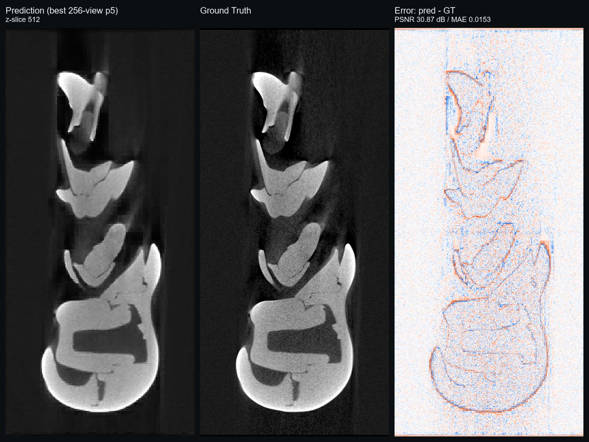

Profile
I am a graduate student at the University of Tokyo, working at the intersection of industrial CT reconstruction, 3D geometry processing, and CUDA acceleration under the supervision of Prof. Yukie Nagai.
My research interests center on Surface Modeling and high-performance CT Reconstruction. Specifically, I focus on:
- Industrial CT reconstruction and simulation
- Adaptive compressed CT volume representations and CT Gaussian Splatting
- 3D geometry processing and point-cloud surface reconstruction
- CUDA/GPU acceleration for research software
My work aims to bridge algorithmic research and practical system development, building reproducible and scalable toolchains for analysis of complex models.
I am always open to collaborations and searching for internships. Feel free to reach out at derulozsy@gmail.com.
Publications

An automatic framework for quadrilateral surface reconstruction with partitions from 3D point clouds
Shuyang Zhu · Youlong Li · Jizhao Liu · Bin Li*
- Inspired by Polycube Parameterization, we propose a 4-step framework for reconstructing 3D point cloud models into quadrilateral meshes with smooth partitions.
- The resulting meshes faithfully preserve the original geometric features of the input point cloud, making them well-suited for applications such as rigging.

CTGS: Hybrid Gaussian Splatting for Compact Industrial CT Representation
Shuyang Zhu* · Yukie Nagai
- A pipeline that turns CT volumes into a compact Gaussian Splatting representation for industrial CT analysis.
- Focuses on CT internal structures such as voids and material-density variations, as well as shape alignment, for downstream analysis workflows.
- Uses a hybrid Gaussian model with CT-specific slice supervision, geometric regularization, and native CUDA acceleration for efficient volume-based training.
Projects

Adaptive CT Volume (Ongoing)
Adaptive Projection-Domain CT Reconstruction
- Modeled CT volumes as anisotropic octrees for compression and optimized the representation directly from sparse projection data.
- Maintains clear edge features and accurate surface extraction under sparse-projection training; 256-view training reached 42.75 dB projection PSNR and 30.77 dB slice PSNR, with compressed model size around 8 MB.

CT Simulation Software
High-Accuracy and Customizable CT Simulation
- Built software to simulate CT scans from 3D models with physical accuracy.
- Included lattice generation, defect injection, physics-based compression simulation using FEM, and GPU dynamic batching for large-volume processing.

Porous CT Processor
Pore Network Modeling + 4D CT Analysis
- Designed an analysis and visualization suite with GUI for porous CT datasets.
- Integrated rendering, pore network modeling (PNM), 4D tracking of pore evolution, and GPU acceleration using CuPy.

STL Processor
DirectX 12 Mesh Processing & Visualization
- Developed a DirectX 12 application for STL mesh repair and visualization.
- Implemented polycube parameterization, hole filling, normal correction, denoising, and smoothing.
- Additional Coursework Projects
Implemented single-cycle and five-stage pipeline CPU architectures in Vivado coursework projects. Created Godot visualizations for search, graph, and tree algorithms.
Awards
- 2025: The University of Tokyo Fellowship.
- 2023: 9th "Internet+" Innovation and Entrepreneurship Competition, Gansu Province Gold Award.
- 2022: 13th BlueBridge Cup, Gansu Province Third Prize.
- 2022–2024: Lanzhou University Scholarship.
Education
- 2025.10 – Present: M.E. candidate, Nuclear Engineering and Management, the University of Tokyo, Tokyo, Japan.
- 2024.10 – 2025.03: Special Auditor, Dept. of Electronics and Information Engineering, Hokkaido University, Sapporo, Japan.
- 2021.09 – 2025.07: B.E. in Digital Media Technology, Lanzhou University, Lanzhou, China.
Work Experience
- 2026.08 – Present:Tencent, Game Research & Development Intern, Engine Research.Developed a new volumetric smoke rendering mode in Unreal Engine 5, enabling efficient smoke volume rendering with global illumination.
- 2026.07:Polyphony Digital, Engineer(internship).Built a FlashSplat-based 3DGS segmentation tool that extracts object-level segments from trained 3D Gaussian Splatting assets within seconds through click selection, without pre-baked segmentation attributes.
- 2026.05 – Present:Synesthesia, Technical Development Intern.Delivered a wall-surface inclination metrology workflow that achieves stable millimeter-level accuracy on complex wall point clouds with vegetation, protrusions, and other disturbances.
- 2026.04 – 2026.05:Fixstars, Year-round Intern.Reduced Open-Sora 2 inference peak VRAM from 39.7 GB to 20.93 GB via lazy load, unified memory, and cache residency management, so it could run efficiently on 24 GB-class GPUs without quantization.


个人简介
我目前是东京大学修士学生，在长井超慧准教授指导下，从事工业 CT 重建、三维几何处理与 CUDA 加速交叉方向的研究。
研究方向集中于曲面建模与高性能 CT 重建，具体包括：
- 工业 CT 重建与仿真
- 自适应压缩 CT 体表示与 CT Gaussian Splatting
- 三维几何处理与点云表面重建
- 面向科研软件的 CUDA/GPU 加速
我致力于将算法研究与工程实践相结合，构建可复现、可扩展的复杂模型分析工具链。
欢迎合作交流，也正在寻找实习机会，联系邮箱：derulozsy@gmail.com。
发表
An automatic framework for quadrilateral surface reconstruction with partitions from 3D point clouds
Shuyang Zhu · Youlong Li · Jizhao Liu · Bin Li*
- 受 Polycube 参数化启发，提出包含四个步骤的框架将三维点云重建为带有光滑分区的四边形网格，步骤包含一维骨架提取、骨架驱动分割、初始网格生成与进化式重建。
- 重建结果能良好保留点云原始几何特征，便于骨骼绑定等应用。
CTGS: Hybrid Gaussian Splatting for Compact Industrial CT Representation
Shuyang Zhu* · Yukie Nagai
- 一条将 CT 体数据转换为紧凑 Gaussian Splatting 表示的工业 CT 分析流程。
- 关注 CT 内部结构（如空洞、材料密度变化等）和表面形状对齐，服务于后续分析工作流。
- 采用混合高斯模型，结合 CT 特定的切片监督、几何正则化与原生 CUDA 加速，实现高效的体数据训练。
项目
Adaptive CT Volume
自适应投影域 CT 重建
- 将 CT 体积模型建模为各向异性八叉树进行压缩，可以直接由稀疏投影数据优化。
- 能够在稀疏投影训练情况下保持良好的边缘特征以及准确的表面提取能力；256-view 训练下结果达到投影 PSNR 42.75 dB、切片 PSNR 30.77 dB，压缩后模型体积约为 8 MB。
CT 模拟软件
高精度可定制化 CT 仿真
- 开发了可基于三维模型以物理精度模拟 CT 扫描的软件。
- 包含晶格结构生成、缺陷注入、基于有限元法（FEM）的物理压缩仿真，以及面向大体积处理的 GPU 动态批处理。
多孔介质 CT 处理器
孔隙网络建模 + 4D CT 分析
- 设计了带 GUI 的多孔介质 CT 数据分析与可视化套件。
- 集成渲染、孔隙网络建模（PNM）、孔隙演化的 4D 追踪，以及基于 CuPy 的 GPU 加速。
STL 处理工具
DirectX 12 网格处理与可视化
- 开发了用于 STL 网格修复与可视化的 DirectX 12 应用程序。
- 实现 Polycube 参数化、孔洞填补、法向量纠正、降噪和平滑处理。
- 课程项目
在 Vivado 硬件设计项目中实现单周期和五级流水线 CPU 架构。 使用 Godot 制作搜索、图和树算法的算法可视化项目。
奖项
- 2025：东京大学Fellowship（University of Tokyo Fellowship）。
- 2023：第九届"互联网+"创新创业大赛甘肃省金奖。
- 2022：第十三届蓝桥杯甘肃省三等奖。
- 2022–2024：兰州大学奖学金。
教育经历
- 2025.10 – 至今：工学修士候选人，东京大学 工学系研究科 原子力国际专攻，东京，日本。
- 2024.10 – 2025.03：特别听讲学生，北海道大学 工学部 情报电子工学科，札幌，日本。
- 2021.09 – 2025.07：工学学士，兰州大学 新闻与传播学院 数字媒体技术专业，兰州，中国。
工作经历
- 2026.08 – 至今：腾讯，Game Research & Development Intern, Engine Research。在 Unreal Engine 5 中开发全新体积烟雾渲染模式，实现高效的带有全局光照的烟雾体渲染。
- 2026.07：Polyphony Digital，Engineer(internship)。开发基于 FlashSplat 的 3DGS 分割工具，在无需预先 bake 分割属性的情况下，通过点击选择等操作在数秒内对已训练好的 3D Gaussian Splatting 资产进行物体级分割提取。
- 2026.05 – 至今：Synesthesia，技术开发实习。交付墙面倾斜度量测流程，在含有植被、墙面突出等复杂干扰的墙面点云场景下，稳定实现毫米级准确测量。
- 2026.04 – 2026.05：Fixstars，通年实习。通过 lazy load、unified memory 和缓存驻留管理，将 Open-Sora 2 推理峰值 VRAM 从 39.7 GB 降至 20.93 GB，在无需量化的情况下使其可在 24 GB 级 GPU 上高效运行。
プロフィール
東京大学の大学院生として、长井超慧准教授の指導のもと、工業用 CT 再構成、3D 幾何処理、CUDA 高速化の交差領域に取り組んでいます。
研究関心はサーフェスモデリングと高性能 CT 再構成を中心としており、具体的には以下の分野に取り組んでいます：
- 工業用 CT の再構成とシミュレーション
- 適応圧縮 CT ボリューム表現と CT Gaussian Splatting
- 3D 幾何処理と点群表面再構成
- 研究ソフトウェア向け CUDA/GPU 高速化
アルゴリズム研究と実用的なシステム開発を橋渡しし、複雑な構造の定量解析のための再現可能なツールチェーンの構築を目指しています。
共同研究やインターンシップを随時募集しています。お気軽にご連絡ください：derulozsy@gmail.com
発表
An automatic framework for quadrilateral surface reconstruction with partitions from 3D point clouds
Shuyang Zhu · Youlong Li · Jizhao Liu · Bin Li*
- Polycube パラメータ化に着想を得て、三次元点群モデルをなめらかなパーティション付き四辺形メッシュに再構成する 4 ステップのフレームワーク（1D スケルトン抽出・スケルトン駆動分割・初期メッシュ生成・進化的再構成）を提案。
- 生成されたメッシュは元の点群の幾何学的特徴を忠実に保持し、スキニングなどの用途に適しています。
CTGS: Hybrid Gaussian Splatting for Compact Industrial CT Representation
Shuyang Zhu* · Yukie Nagai
- CT ボリュームをコンパクトな Gaussian Splatting 表現へ変換する、工業用 CT 解析向けのパイプラインです。
- 空隙や材料密度変化などの CT 内部構造と表面形状アラインメントに着目し、後続の解析ワークフローに活用しやすくしています。
- ハイブリッド Gaussian モデルに、CT 固有のスライス監督、幾何正則化、ネイティブ CUDA 高速化を組み合わせ、効率的な体積ベース学習を実現します。
プロジェクト
Adaptive CT Volume
適応的な投影ドメイン CT 再構成
- CT ボリュームモデルを異方性八分木として表現・圧縮し、疎な投影データから直接最適化できます。
- 疎投影での学習条件でも良好なエッジ特徴と正確な表面抽出能力を維持し、256-view 学習では投影 PSNR 42.75 dB、スライス PSNR 30.77 dB を達成、圧縮後のモデルサイズは約 8 MB です。
CT シミュレーションソフトウェア
高精度・カスタマイズ可能な CT シミュレーション
- 3D モデルから物理的精度で CT スキャンをシミュレートするソフトウェアを開発。
- 格子構造生成、欠陥注入、FEM を用いた物理ベースの圧縮シミュレーション、大規模ボリューム向けの GPU 動的バッチ処理を含みます。
多孔質 CT プロセッサ
孔隙ネットワークモデリング + 4D CT 解析
- GUI を備えた、多孔質 CT データの解析・可視化スイートを設計。
- レンダリング、孔隙ネットワークモデリング（PNM）、孔隙進化の 4D 追跡、CuPy による GPU 高速化を統合しています。
STL プロセッサ
DirectX 12 メッシュ処理・可視化
- STL メッシュ修復と可視化のための DirectX 12 アプリケーションを開発。
- Polycube パラメータ化、穴埋め、法線補正、ノイズ除去、平滑化を実装。
- 授業関連プロジェクト
Vivado ハードウェア設計プロジェクトで単一サイクルと 5 段パイプライン CPU アーキテクチャを実装。 検索、グラフ、木アルゴリズムの Godot 可視化を作成。
受賞歴
- 2025：東京大学フェローシップ（University of Tokyo Fellowship）。
- 2023：第 9 回「インターネット+」イノベーション・起業コンテスト 甘粛省金賞。
- 2022：第 13 回ブルーブリッジカップ 甘粛省三等賞。
- 2022–2024：蘭州大学奨学金。
学歴
- 2025.10 – 現在：修士課程、東京大学 大学院工学系研究科 原子力国際専攻、東京、日本。
- 2024.10 – 2025.03：特別聴講学生、北海道大学 工学部 情報エレクトロニクス学科、札幌、日本。
- 2021.09 – 2025.07：工学学士、蘭州大学 新聞与伝播学院 デジタルメディア技術専攻、蘭州、中国。
職歴
- 2026.08 – 現在：テンセント、Game Research & Development Intern, Engine Research。Unreal Engine 5 上で新しい体積煙レンダリングモードを開発し、グローバルイルミネーションを伴う煙ボリュームの効率的なレンダリングを実現。
- 2026.07：ポリフォニー・デジタル、Engineer(internship)。FlashSplat ベースの 3DGS セグメンテーションツールを開発し、事前にセグメンテーション属性を bake せず、クリック選択などの操作により学習済み 3D Gaussian Splatting アセットから物体単位の領域を数秒で抽出。
- 2026.05 – 現在：シナスタジア、技術開発インターン。植生や壁面の突出など複雑な外乱を含む壁面点群に対して、ミリメートル級の精度で安定して傾斜を測定できるワークフローを構築。
- 2026.04 – 2026.05：フィックスターズ、通年インターン。Lazy load、unified memory、キャッシュ常駐管理により Open-Sora 2 推論時のピーク VRAM を 39.7 GB から 20.93 GB へ削減し、量子化なしで 24 GB 級 GPU 上での効率的な実行を実現。